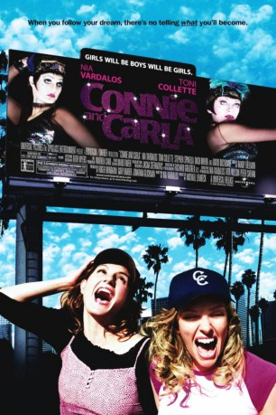

#10959 Connie und Carla
Alternativ: Connie and Carla (Englischer Titel)
 
 IMDB-Wertung: 6.3 / 10
IMDB-Wertung: 6.3 / 10  Metascore: 44
Metascore: 44 
Nachdem die beiden Chicagoer Sängerinnen Connie und Carla Zeugen eines Mafia Mordes wurden, ergreifen sie die Flucht und treten fortan in Los Angeles als Transvestiten auf. Durch ihre Show werden die Beiden als neue Stars der Szene gefeiert und ihre Tarnung droht aufzufliegen. Noch dazu lernt Connie Jeff kennen, dem sie sich gerne als Frau vorstellen würde.
Jahr: 2004
Dauer: 93 Minuten
FSK: 6
Land: USA Studio: Universal PicturesTonspuren:
Untertitel:
Auflösung: 1080p (1920x1040) Größe: 4526 MB
Genre: Musik, Komödie, Krimi
Regisseur: Michael Lembeck
Drehbuch: Nia Vardalos
Soundtrack: Randy Edelman
Darsteller:
 Nia Vardalos als Connie
Nia Vardalos als Connie Toni Collette als Carla
Toni Collette als Carla David Duchovny als Jeff
David Duchovny als Jeff Stephen Spinella als Robert / Peaches
Stephen Spinella als Robert / Peaches Alec Mapa als Lee / N'Cream
Alec Mapa als Lee / N'Cream- Christopher Logan als Brian / Brianna
 Ian Gomez als Stanley
Ian Gomez als Stanley- Nick Sandow als Al
 Dash Mihok als Mikey
Dash Mihok als Mikey Robert John Burke als Rudy
Robert John Burke als Rudy Boris McGiver als Tibor
Boris McGiver als Tibor- Don Ackerman als Super Fey Guy
 Debbie Reynolds als Herself (Special Appearance)
Debbie Reynolds als Herself (Special Appearance) Veena Sood als Mrs. Morse
Veena Sood als Mrs. Morse- Babs Chula als Carla's Mom
 Linda Darlow als Connie's Mom
Linda Darlow als Connie's Mom- Charles Andrew Payne als Hollywood Policeman
- Michael Roberds als Frank
 Gary Jones als Bartender
Gary Jones als Bartender- Adam J. Harrington als Cute Guy
- D. Neil Mark als Crooked Cop
- Krista Rae als Mary
- Brittney Wilson als Young Carla
- Kristi Angus als Woman in Crowd
 Fred Keating als Man in Airport
Fred Keating als Man in Airport June B. Wilde als Woman in Airport
June B. Wilde als Woman in Airport Chelah Horsdal als Botox's Friend
Chelah Horsdal als Botox's Friend Greg Grunberg als Studio Tour Guide
Greg Grunberg als Studio Tour Guide- Robert Kaiser als Paul
- Guy Fauchon als Another Super Fey Guy
- Fiona Hogan als Natasha
- Ryf Van Rij als Cute Guy
- Danielle Woodman als Young Connie
- Douglas Baird als Cameraman
- Nicola Crosbie als Reporter
- Bart Anderson als Man in Airport
- Paddy Ma als Groove Thing Queen
- Jay Williams als Groove Thing Queen
- Todd Oberg als Groove Thing Queen
- Kristina Copeland als Botox Woman
- Carl McDonald als Dressing Room Guy
- Elaine Kliner als Snoring Woman in Airport
- Douglas McLeod als Bass Player
- Stephen Cottrill als Guitar Player
- Lloyd Nicholson als Pianist
- Gordon Roberts als Drummer
Datei: X:\2004(A-F)\Connie und Carla (2004, FSK6, 1920x1040).mkv seit 11.04.2019
Festplatte: HD 2003-2004-2005(A-F)
 Es gibt insgesamt 39 Filme in der Gruppe '2004(A-F)'
Es gibt insgesamt 39 Filme in der Gruppe '2004(A-F)'